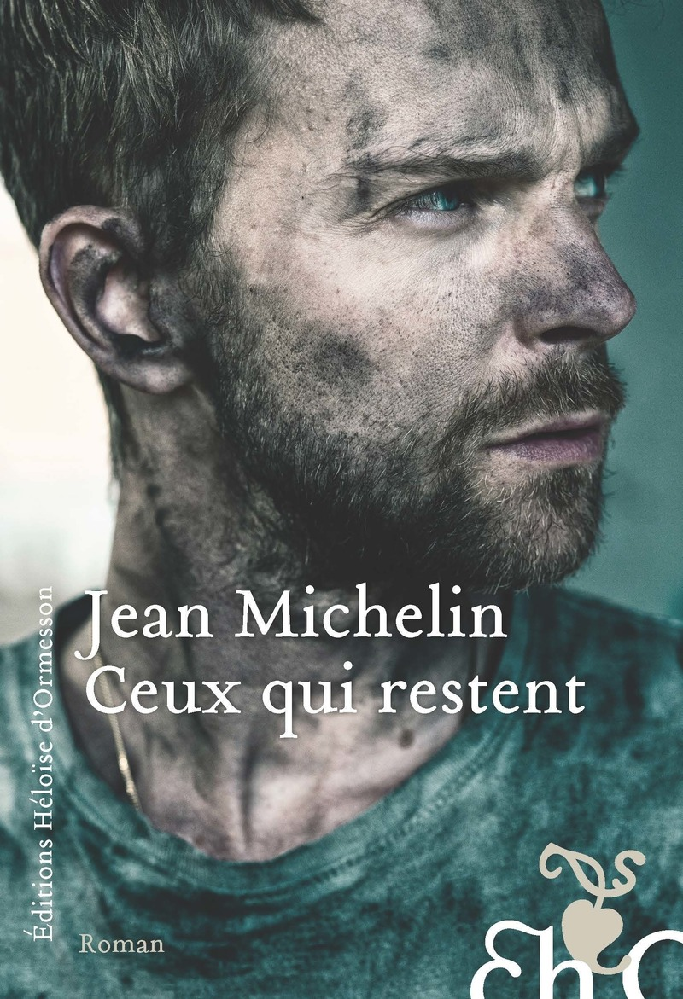

Seul sur Mars et dernier de son espèce après la décimation de l’humanité par un virus, John Renfrew essaye de ne pas devenir fou en se spécialisant à fond en cosmologie et en discutant avec l’hologramme d’un pianiste excentrique (pourtant pas vraiment conçu pour faire la conversation). Un pitch ma foi fort réjouissant, d’autant que je sais Alastair Reynolds capable de susciter l’émerveillement. En partant de prémisses déjà vues (le coup du colon abandonné sur sa planète, on connaît), De l’espace et du temps a réussi à me surprendre par la légèreté de son ton et par son ambition de nous envoyer très loin des basses considérations terrestres.
Titre original : Understanding Space and Time / Sortie originale (anglais) : 2005 / Version française : 2024 (traduction : Laurent Queyssi)
Celui-là, il est spécial, car vivement conseillé depuis des années par une personne très chère à mon coeur. J’ai pris mon temps pour m’y mettre, un peu impressionné par la tâche. La petite femelle revient sur une affaire judiciaire des années 1950 qui a fait de Pauline Dubuisson la femme la plus haïe de France. Outré par le sort qui a été réservé à la jeune femme, jugée pour le meurtre de son ex-amant, Philippe Jaenada fait le travail manifestement bâclé par l’instruction : revenir sur les faits. Il repart de la petite enfance étrange et isolée de Pauline Dubuisson, continue par son adolescence sous l’Occupation (qui lui sera vivement reprochée), puis par son parcours au sortir de la guerre. C’est un travail rigoureux et très impressionnant qui a été réalisé là, dont il est difficile de ne pas ressortir en colère et abasourdi par une parodie de justice et de cirque médiatique infâme.
Sortie : 2015
Souvenirs, une folle traversée de la Russie révolutionnaire raconte le périple de l’autrice et satiriste russe Nadejda Alexandrovna Lokhvitskaïa, dite “Teffi”, à travers la Russie en pleine guerre civile, peu de temps après la révolution d’Octobre. Personnalité reconnue tant pour ses articles de presse que pour ses pièces de théâtre, Teffi a été un temps très critique du régime impérial et proche des révolutionnaires. Pourtant, déçue par la tournure des événements, accompagnée d’un imprésario haut en couleur et d’une troupe de comédiens, elle quitte Moscou et entame un exil qui passera notamment par Kiev et Odessa. C’est un récit parsemé de moments tantôt anecdotiques, tantôt hautement traumatiques, racontés d’un ton détaché, voire ironique, qui donnent une perspective étonnante sur cette époque. Certains passages ont par contre très mal vieilli et sont gâchés par un racisme évident, ce qui n’aide pas vraiment à le conseiller sans réserve.
Sortie originale (russe) : 1928 (?) / Version française : 2017 (traduction : Mahaut de Cordon-Prache)
J’ai découvert Jean Michelin sur les réseaux sociaux, à l’époque où Twitter existait. Le genre de comptes qu’on suit parce qu’il a souvent des choses intéressantes à raconter et que le type a l’air sympathique. Jonquille, le récit de son expérience en Afghanistan, m’avait beaucoup intéressé. Ceux qui restent, par contre, est un roman. Au retour d’une mission (“là-bas”), Stéphane, un adjudant très apprécié fraîchement revenu à la vie civile (“ici”) est contacté par d’anciens collègues : Lulu a disparu. Les désertions, ça arrive, mais celle-là surprend. Stéphane, accompagné de trois “frères d’armes” se met alors à sa recherche. Grâce à des flash-backs, on en apprend davantage sur le déroulé de cette fameuse mission, qui a vu la mort d’un jeune sergent. Jean Michelin brosse un tableau de l’armée française qui change des clichés. Le livre est bien raconté, aborde ses thèmes avec une certaine justesse, mais le ton grave de bout en bout peut s’avérer pesant à la longue. La fin, par ailleurs, m’a laissé complètement sur le bord de la route.
Sortie : 2022